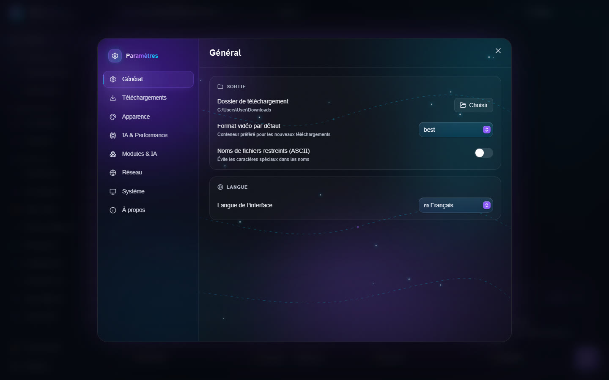
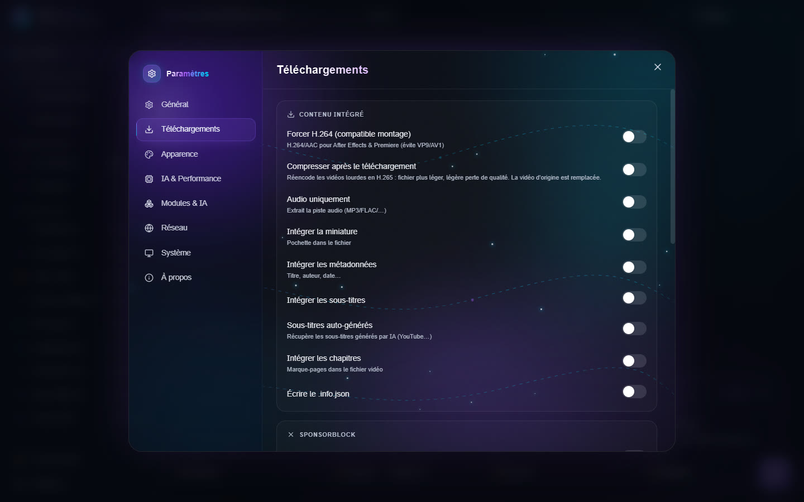
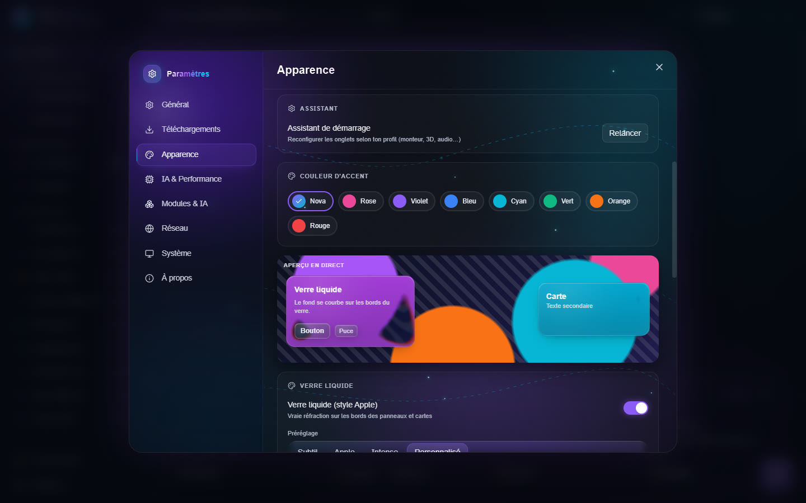
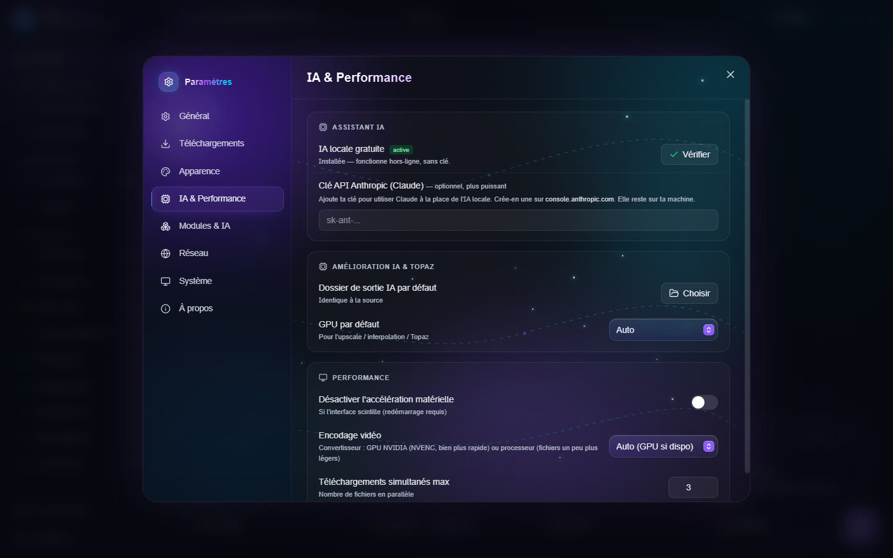
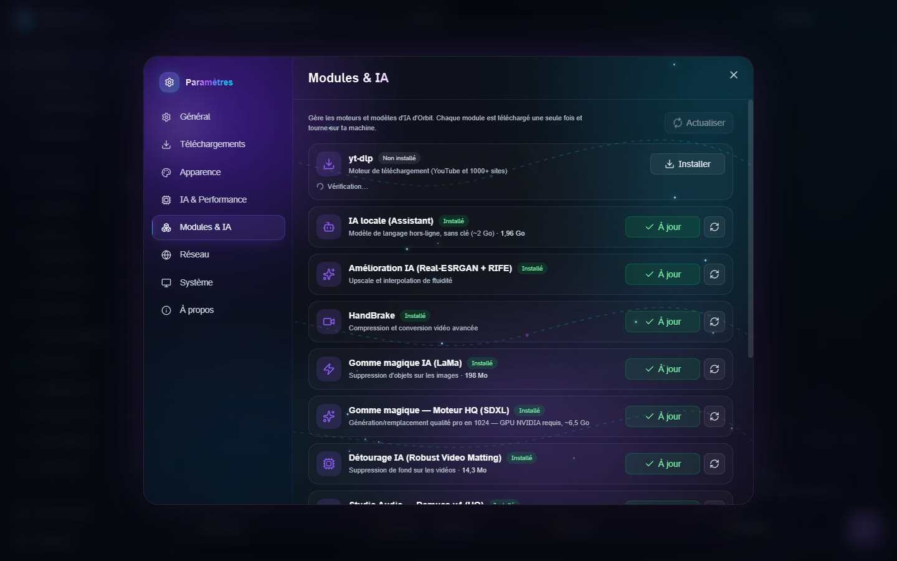
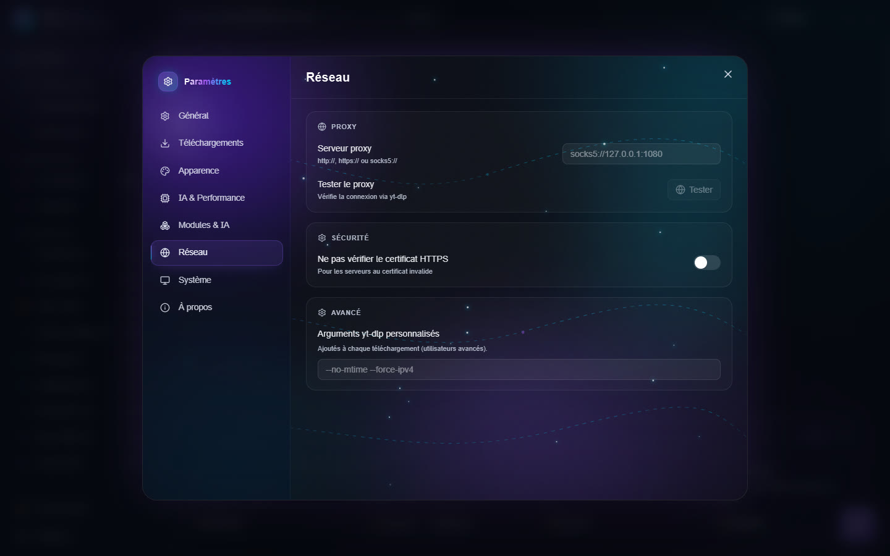
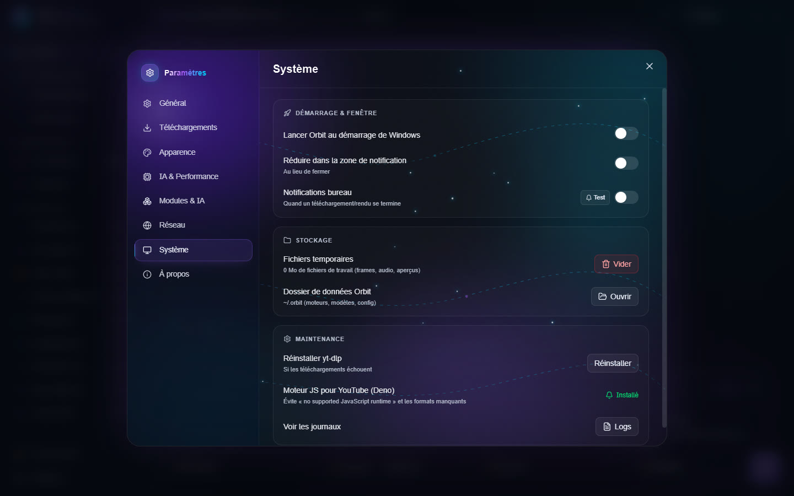
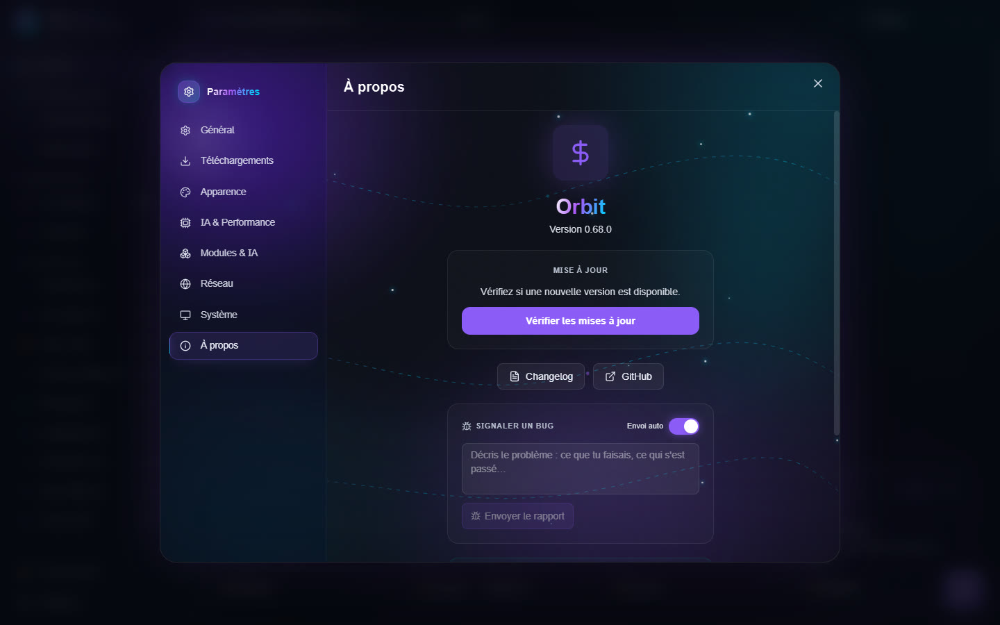

Réglages
Ouvrez les réglages avec Réglages, en bas de la barre latérale. Les pages sont listées à gauche.
Général


- Sortie : Dossier de téléchargement, Format vidéo par défaut, Noms de fichiers restreints (ASCII) (évite les caractères spéciaux dans les noms).
- Langue : la langue de l'interface (français, anglais, espagnol, allemand, italien, portugais).
Téléchargements


Contenu intégré :
- Forcer H.264 (compatible montage) : H.264/AAC pour After Effects et Premiere, au lieu de VP9 ou AV1 ;
- Compresser après le téléchargement ;
- Audio uniquement : ne garder que le son (MP3, FLAC…) ;
- Intégrer la miniature (pochette), les métadonnées (titre, auteur, date), les sous-titres, les chapitres ;
- Sous-titres auto-générés et Langues des sous-titres (codes séparés par des virgules, par exemple
fr.*,en.*) ; - Écrire le .info.json ;
- Marquer les segments sponsors (chapitres SponsorBlock) ou Supprimer les sponsors (coupe intro, pub…).
Comportement :
- Archive de téléchargement : ne jamais retélécharger ce qui l'a déjà été ;
- Ignorer les erreurs : continuer une playlist si une vidéo échoue ;
- Conserver l'horodatage d'origine, Pas de fichiers .part ;
- Fragments simultanés : accélère les flux HLS et DASH ;
- Jobs IA simultanés (GPU) : combien d'outils IA utilisent la carte graphique en même temps. 1 (file d'attente) est recommandé ;
- VRAM maximale pour l'IA : plafond de mémoire vidéo pour les moteurs IA, de 1 Go à la taille de votre carte, ou Illimitée. Utile pour garder de la place pour un jeu ou un autre logiciel ;
- Limite de vitesse : par exemple
5Mou800k(vide = illimité) ; - Menu clic droit Windows : ajoute « Orbit ▸ Compresser / Recadrer… » au clic droit sur un fichier.
Authentification : Cookies du navigateur, pour les contenus qui demandent une connexion.
Apparence


- Thème : Nova, Graphite, Noir, Blanc, Minuit, ou Système (suit le mode clair/sombre de Windows).
- Assistant de démarrage : Relancer pour réorganiser les onglets selon votre profil.
- Couleur d'accent.
- Verre liquide (style Apple) : vraie réfraction sur le bord des panneaux et des cartes. Préréglages Subtil, Apple, Intense ou Personnalisé, puis réglages fins : réfraction, effet prisme, flou du verre, teinte, reflets, reflet qui suit la souris, ombre portée. Un aperçu en direct montre le résultat.
- Fond d'écran : une image derrière le verre, avec son flou et son assombrissement ; Flou des pages d'outils et Ombre du texte pour garder le texte lisible.
- Texte plus lumineux : éclaircit les textes gris secondaires.
- Réinitialiser remet tous les réglages du verre, du fond et du texte par défaut.
- Sons de l'interface : petits bruitages au clic.
IA & Performance


- Assistant IA : IA locale gratuite (environ 2 Go, téléchargée une fois, fonctionne hors connexion) ou votre Clé API Anthropic (Claude), plus puissante. La clé reste sur votre PC.
- Amélioration IA & Topaz : Dossier de sortie IA par défaut et GPU par défaut pour l'upscale, l'interpolation et Topaz.
- Performance :
- Désactiver l'accélération matérielle si l'interface scintille (redémarrage requis) ;
- Encodage vidéo du Convertisseur : Auto (GPU si dispo), GPU NVIDIA (NVENC) ou Processeur (CPU) ;
- Téléchargements simultanés max.
Modules & IA


La liste de tous les moteurs et modèles d'Orbit (yt-dlp, ffmpeg, IA locale, Real-ESRGAN, RIFE, HandBrake, Gomme magique, Détourage, Studio Audio, IA Création 3D…), avec leur taille et leur état. Installez, mettez à jour ou supprimez chacun d'un clic ; Actualiser vérifie l'état de tous.
Réseau


- Serveur proxy et Tester le proxy (vérifie la connexion via yt-dlp).
- Sécurité : Ne pas vérifier le certificat HTTPS (pour les serveurs au certificat invalide ; à éviter sauf besoin).
- Avancé : Arguments yt-dlp personnalisés, ajoutés à chaque téléchargement.
Système


- Démarrage & fenêtre : lancer Orbit au démarrage de Windows, réduire dans la zone de notification au lieu de fermer, notifications quand un téléchargement ou un rendu se termine.
- Stockage : Fichiers temporaires (taille des fichiers de travail, bouton Vider) et Dossier de données Orbit (Ouvrir).
- Maintenance : Réinstaller yt-dlp si les téléchargements échouent ; Moteur JS pour YouTube (Deno), qui évite l'erreur « no supported JavaScript runtime » et les formats manquants ; Voir les journaux.
À propos


- Version et Vérifier les mises à jour.
- Signaler un bug : décrivez le problème et cliquez Envoyer le rapport. Envoi auto envoie aussi les erreurs automatiquement (sans vos fichiers ni votre nom d'utilisateur).
- Confidentialité : aucun pistage ni statistique d'usage ; vos statistiques restent sur votre appareil.